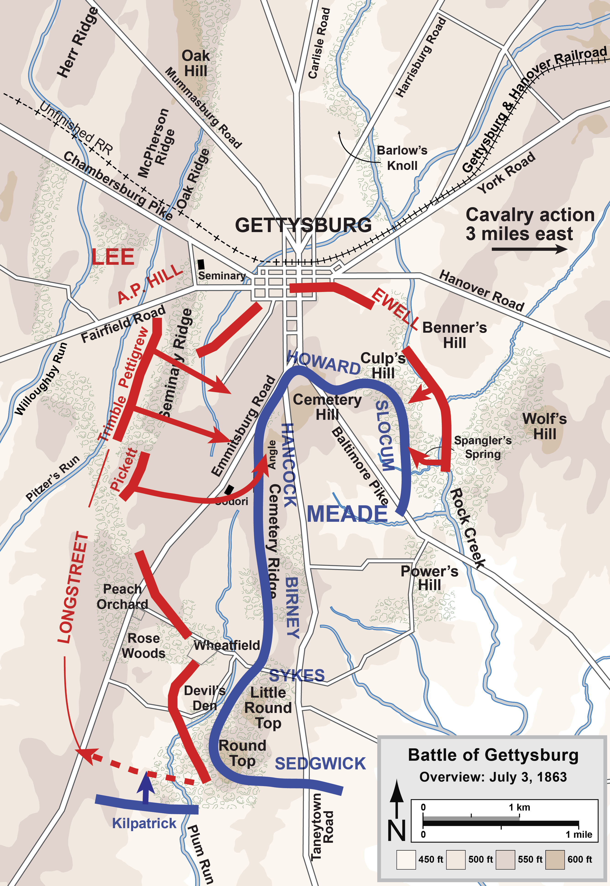

The Battle of Gettysburg, Day 3
(July 3, 1863)

After his plans on July 1 and July 2 were frustrated, Confederate Gen. Robert E. Lee
decided to deploy his remaining resources in an assault on the center of the Union line.
After a morning of artillery bombardment (in which the Confederate guns actually did very
little damage), three Confederate divisions under the command of Maj. Gen. George Pickett,
Brig. Gen. J. Johnston Pettigrew, and Maj. Gen. Isaac R. Trimble began a 1-1/2 mile march
across the battlefield. This maneuver, the most famous of the Civil War, is known
popularly as "Pickett's Charge" (though many historians prefer the more accurate
"Pickett-Pettigrew Assault" or "Pickett-Pettigrew-Trimble Assault"). The charge was a
disaster, with a casualty rate of more than 50% for the Confederates. Memorably, when Lee
ordered Pickett to rally his division in case of a Union counterattack, Pickett replied,
"General Lee, I have no division." The Confederates quit the battlefield the next day and
retreated back to the South, never again to launch a full-scale invasion of the North.
Note: Click on the image for a larger version.
Source: Hal Jespersen's Civil War Maps
|

{kind=link}